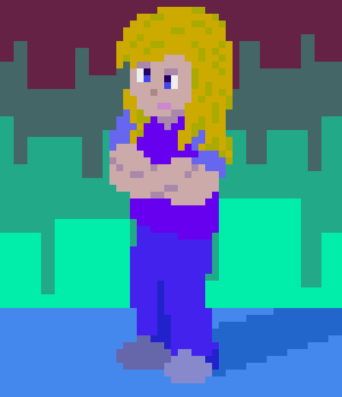
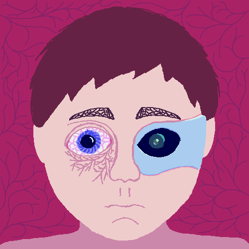

Motion Art
In Fall 2022, I took an animation class at my college. These are some of the pieces I made for it.

Animated Self Portrait (2022)
I created this in a day as a self portrait and my first real attempt at pixel animation.

Augment (2022)
This is the second piece I made for that animation class. The task was to make a blinking animation, but decided to take it a step further by making it a crying animation.

Spider (2022)
I had to animate a walk cycle for the class, but I thought it would be fun to have it be a spider, which involves animating more appendages. I originally planned on making it skuttle like a real spider, but made it walk upright in order to better fit the assignment. Instead of rotating the camera, I had the background assets warp, which I thought was more interesting. More animations were made for this class, though I don't think they were good enough to show off.